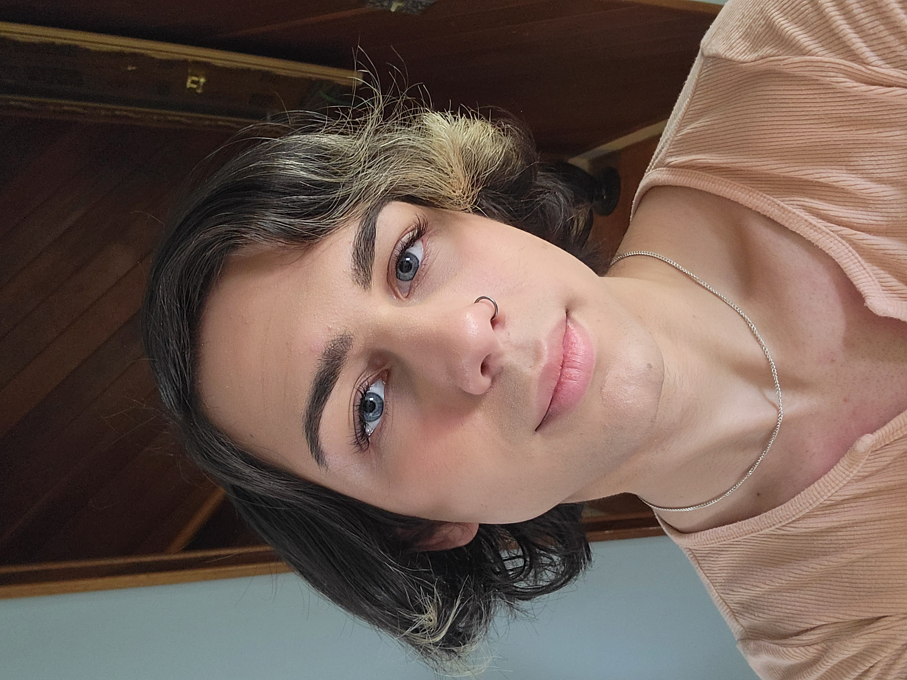
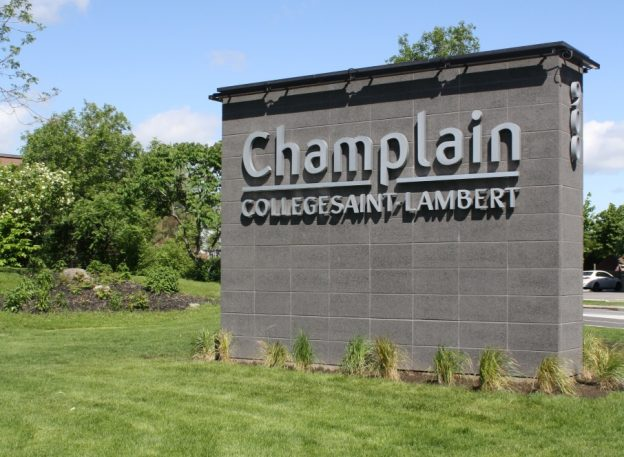

Hello there, my name is Jess Al Fahad! I am an aspiring full-stack web developer, having been creating websites and playing with computers for the past 4 years. Specifically, I've accrued experience in various web-focused programming languages, such as: HTML, CSS, JS and PHP. I also have experience working with the Microsoft Office Suite, Git and UML, and I pride myself in being a capable leader and dependable teammate.


Champlain Regional College St-Lambert

Champlain College Saint-Lambert; credit: https://www.crc-sher.qc.ca/constituents/champlain-saint-lambert/
I am currently enrolled in Champlain Regional College, an English CEGEP located in St-Lambert, Quebec.
It is currently my second year there, however it is my first year in the Computer Science and Technology program.
This three-year career program is designed to provide us with all the required tools to enter the job market right after CEGEP (unlike pre-university programs).
Despite this, I would very much like to continue into higher education, preferably at ÉTS (École de Technologie Supérieur).
I chose this program since I am a naturally very tech-savvy person. I enjoy using and exploring open-source alternatives to proprietary software, building my own desktops and servers as well as building and designing websites.
During my first semester of the Computer Science and Technology program, I was instructed to build a site week-by-week,
learning web development and design concepts. The site, however, does not have a design that fits within modern design
philosophies and best practices.
For my portfolio site, I decided to make something clean, simple and with more animations and interactivity. Using
Javascript was also useful in creating a more user-friendly responsive design (like a toggleable dropdown).
How to reach me?
If you're looking for a junior developer with a passion for tech and experience in front-end web technologies, you can reach me at j.alfahad@tutanota.com, or you can find me on GitHub as well as LinkedIn.